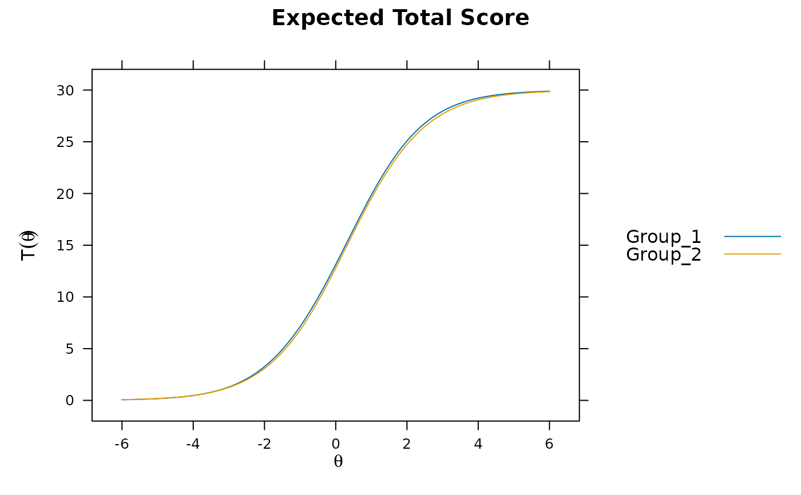
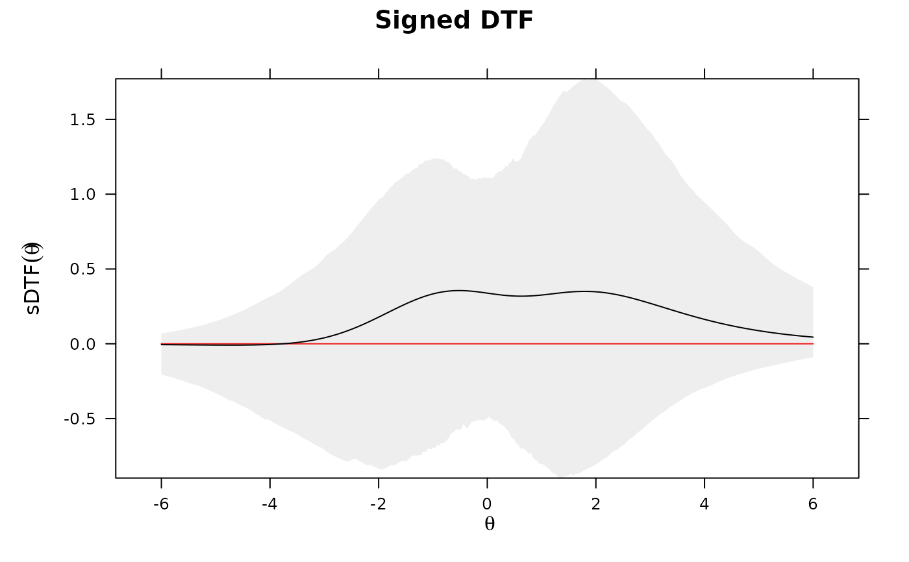
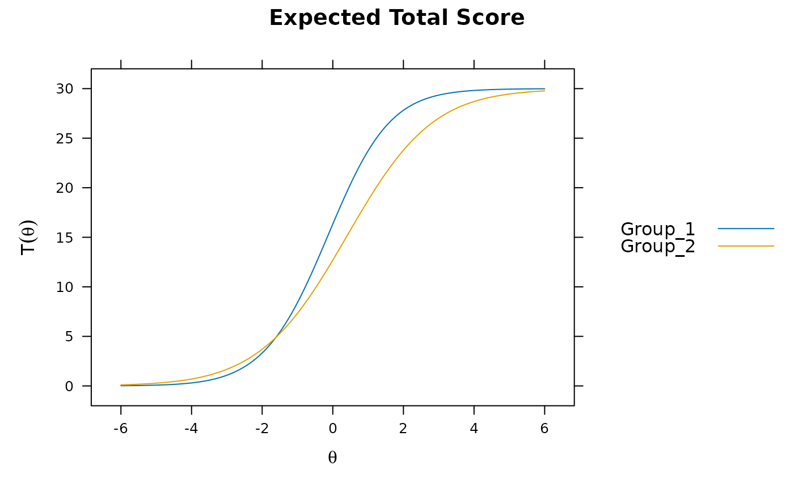
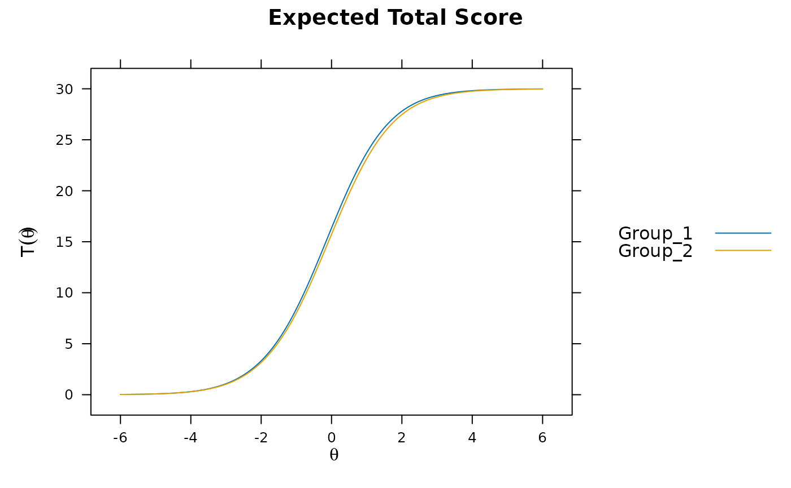
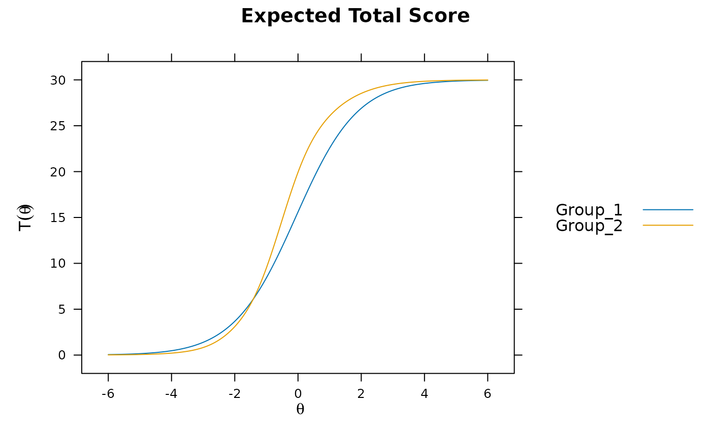
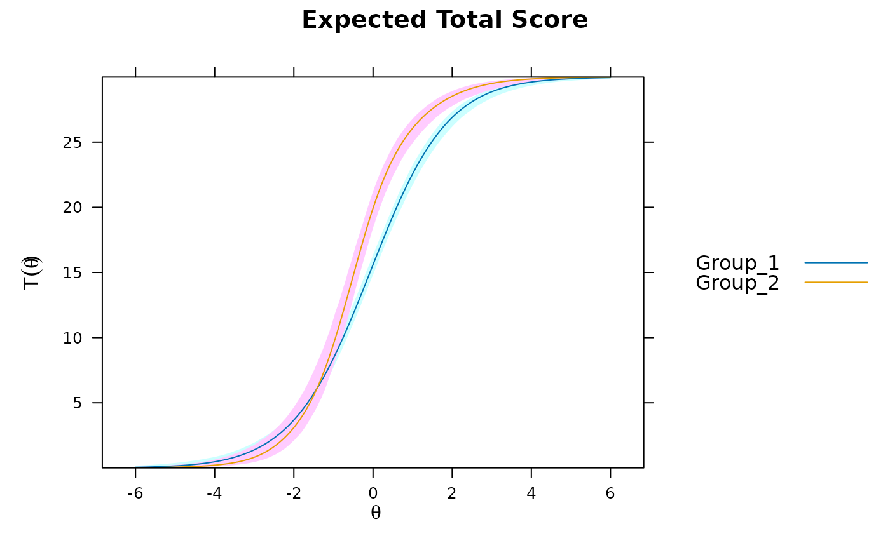
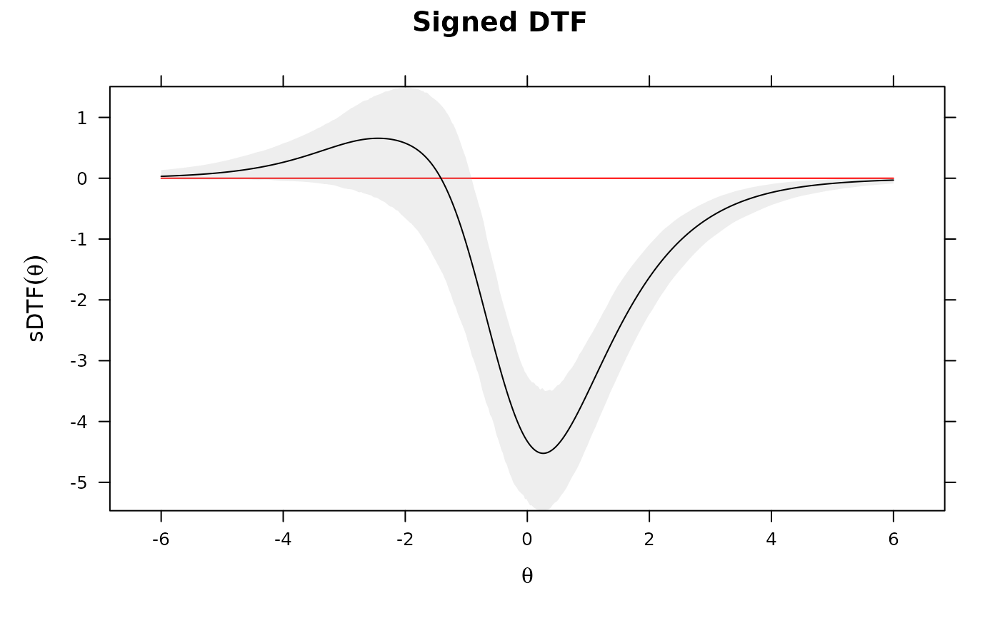

Function performs various omnibus differential test functioning procedures on an object
estimated with multipleGroup(). If the latent means/covariances are suspected to differ
then the input object should contain a set of 'anchor' items to ensure that only differential
test features are being detected rather than group differences. Returns signed (average area
above and below) and unsigned (total area) statistics, with descriptives such as the percent
average bias between group total scores for each statistic. If a grid of Theta values is passed,
these can be evaluated as well to determine specific DTF location effects. For best results,
the baseline model should contain a set of 'anchor' items and have freely estimated
hyper-parameters in the focal groups. See DIF for details.
Arguments
- mod
a multipleGroup object which estimated only 2 groups
- draws
a number indicating how many draws to take to form a suitable multiple imputation estimate of the expected test scores (usually 100 or more). Returns a list containing the imputation distribution and null hypothesis test for the sDTF statistic
- CI
range of confidence interval when using draws input
- npts
number of points to use in the integration. Default is 1000
- theta_lim
lower and upper limits of the latent trait (theta) to be evaluated, and is used in conjunction with
npts- Theta_nodes
an optional matrix of Theta values to be evaluated in the draws for the sDTF statistic. However, these values are not averaged across, and instead give the bootstrap confidence intervals at the respective Theta nodes. Useful when following up a large uDTF/sDTF statistic to determine where the difference between the test curves are large (while still accounting for sampling variability). Returns a matrix with observed variability
- plot
a character vector indicating which plot to draw. Possible values are 'none', 'func' for the test score functions, and 'sDTF' for the evaluated sDTF values across the integration grid. Each plot is drawn with imputed confidence envelopes
- auto.key
logical; automatically generate key in lattice plot?
- ...
additional arguments to be passed to
latticeandboot
References
Chalmers, R., P. (2012). mirt: A Multidimensional Item Response Theory Package for the R Environment. Journal of Statistical Software, 48(6), 1-29. doi:10.18637/jss.v048.i06
Chalmers, R. P., Counsell, A., and Flora, D. B. (2016). It might not make a big DIF: Improved Differential Test Functioning statistics that account for sampling variability. Educational and Psychological Measurement, 76, 114-140. doi:10.1177/0013164415584576
Author
Phil Chalmers rphilip.chalmers@gmail.com
Examples
# \donttest{
set.seed(1234)
n <- 30
N <- 500
# only first 5 items as anchors
model <- 'F = 1-30
CONSTRAINB = (1-5, a1), (1-5, d)'
a <- matrix(1, n)
d <- matrix(rnorm(n), n)
group <- c(rep('Group_1', N), rep('Group_2', N))
## -------------
# groups completely equal
dat1 <- simdata(a, d, N, itemtype = '2PL')
dat2 <- simdata(a, d, N, itemtype = '2PL')
dat <- rbind(dat1, dat2)
mod <- multipleGroup(dat, model, group=group, SE=TRUE,
invariance=c('free_means', 'free_var'))
#>
Iteration: 1, Log-Lik: -17307.965, Max-Change: 0.28420
Iteration: 2, Log-Lik: -17250.980, Max-Change: 0.10050
Iteration: 3, Log-Lik: -17245.754, Max-Change: 0.04784
Iteration: 4, Log-Lik: -17244.017, Max-Change: 0.02740
Iteration: 5, Log-Lik: -17243.195, Max-Change: 0.01738
Iteration: 6, Log-Lik: -17242.738, Max-Change: 0.01433
Iteration: 7, Log-Lik: -17242.172, Max-Change: 0.03064
Iteration: 8, Log-Lik: -17241.991, Max-Change: 0.01493
Iteration: 9, Log-Lik: -17241.868, Max-Change: 0.01317
Iteration: 10, Log-Lik: -17241.705, Max-Change: 0.04880
Iteration: 11, Log-Lik: -17241.358, Max-Change: 0.01220
Iteration: 12, Log-Lik: -17241.290, Max-Change: 0.00933
Iteration: 13, Log-Lik: -17241.205, Max-Change: 0.03405
Iteration: 14, Log-Lik: -17241.014, Max-Change: 0.00852
Iteration: 15, Log-Lik: -17240.977, Max-Change: 0.00654
Iteration: 16, Log-Lik: -17240.930, Max-Change: 0.02404
Iteration: 17, Log-Lik: -17240.825, Max-Change: 0.00610
Iteration: 18, Log-Lik: -17240.804, Max-Change: 0.00469
Iteration: 19, Log-Lik: -17240.779, Max-Change: 0.01725
Iteration: 20, Log-Lik: -17240.721, Max-Change: 0.00438
Iteration: 21, Log-Lik: -17240.710, Max-Change: 0.00337
Iteration: 22, Log-Lik: -17240.696, Max-Change: 0.01245
Iteration: 23, Log-Lik: -17240.664, Max-Change: 0.00318
Iteration: 24, Log-Lik: -17240.658, Max-Change: 0.00245
Iteration: 25, Log-Lik: -17240.650, Max-Change: 0.00906
Iteration: 26, Log-Lik: -17240.632, Max-Change: 0.00232
Iteration: 27, Log-Lik: -17240.629, Max-Change: 0.00178
Iteration: 28, Log-Lik: -17240.625, Max-Change: 0.00663
Iteration: 29, Log-Lik: -17240.615, Max-Change: 0.00170
Iteration: 30, Log-Lik: -17240.613, Max-Change: 0.00130
Iteration: 31, Log-Lik: -17240.611, Max-Change: 0.00488
Iteration: 32, Log-Lik: -17240.605, Max-Change: 0.00124
Iteration: 33, Log-Lik: -17240.604, Max-Change: 0.00096
Iteration: 34, Log-Lik: -17240.603, Max-Change: 0.00358
Iteration: 35, Log-Lik: -17240.600, Max-Change: 0.00093
Iteration: 36, Log-Lik: -17240.600, Max-Change: 0.00071
Iteration: 37, Log-Lik: -17240.599, Max-Change: 0.00263
Iteration: 38, Log-Lik: -17240.597, Max-Change: 0.00068
Iteration: 39, Log-Lik: -17240.597, Max-Change: 0.00054
Iteration: 40, Log-Lik: -17240.597, Max-Change: 0.00194
Iteration: 41, Log-Lik: -17240.596, Max-Change: 0.00051
Iteration: 42, Log-Lik: -17240.596, Max-Change: 0.00038
Iteration: 43, Log-Lik: -17240.595, Max-Change: 0.00140
Iteration: 44, Log-Lik: -17240.595, Max-Change: 0.00038
Iteration: 45, Log-Lik: -17240.595, Max-Change: 0.00029
Iteration: 46, Log-Lik: -17240.595, Max-Change: 0.00106
Iteration: 47, Log-Lik: -17240.594, Max-Change: 0.00028
Iteration: 48, Log-Lik: -17240.594, Max-Change: 0.00021
Iteration: 49, Log-Lik: -17240.594, Max-Change: 0.00079
Iteration: 50, Log-Lik: -17240.594, Max-Change: 0.00021
Iteration: 51, Log-Lik: -17240.594, Max-Change: 0.00014
Iteration: 52, Log-Lik: -17240.594, Max-Change: 0.00051
Iteration: 53, Log-Lik: -17240.594, Max-Change: 0.00016
Iteration: 54, Log-Lik: -17240.594, Max-Change: 0.00013
Iteration: 55, Log-Lik: -17240.594, Max-Change: 0.00036
Iteration: 56, Log-Lik: -17240.594, Max-Change: 0.00012
Iteration: 57, Log-Lik: -17240.594, Max-Change: 0.00010
Iteration: 58, Log-Lik: -17240.594, Max-Change: 0.00033
Iteration: 59, Log-Lik: -17240.594, Max-Change: 0.00009
#>
#> Calculating information matrix...
plot(mod)

DTF(mod)
#> sDTF.score sDTF(%).score uDTF.score uDTF(%).score
#> 0.1742369 0.5807896 0.1768800 0.5896002
if(interactive()) mirtCluster()
DTF(mod, draws = 1000) #95% C.I. for sDTF containing 0. uDTF is very small
#> $observed
#> sDTF.score sDTF(%).score uDTF.score uDTF(%).score
#> 0.1742369 0.5807896 0.1768800 0.5896002
#>
#> $CIs
#> sDTF.score sDTF(%).score uDTF.score uDTF(%).score
#> CI_97.5 0.4728808 1.5762695 0.76426586 2.5475529
#> CI_2.5 -0.1233808 -0.4112693 0.08050925 0.2683642
#>
#> $tests
#> P(sDTF.score = 0)
#> 0.2723393
#>
DTF(mod, draws = 1000, plot='sDTF') #sDTF 95% C.I.'s across Theta always include 0

## -------------
## random slopes and intercepts for 15 items, and latent mean difference
## (no systematic DTF should exist, but DIF will be present)
set.seed(1234)
dat1 <- simdata(a, d, N, itemtype = '2PL', mu=.50, sigma=matrix(1.5))
dat2 <- simdata(a + c(numeric(15), runif(n-15, -.2, .2)),
d + c(numeric(15), runif(n-15, -.5, .5)), N, itemtype = '2PL')
dat <- rbind(dat1, dat2)
mod1 <- multipleGroup(dat, 1, group=group)
#>
Iteration: 1, Log-Lik: -17038.807, Max-Change: 0.34548
Iteration: 2, Log-Lik: -16939.833, Max-Change: 0.13734
Iteration: 3, Log-Lik: -16913.710, Max-Change: 0.07677
Iteration: 4, Log-Lik: -16901.024, Max-Change: 0.05402
Iteration: 5, Log-Lik: -16893.499, Max-Change: 0.04453
Iteration: 6, Log-Lik: -16888.991, Max-Change: 0.03292
Iteration: 7, Log-Lik: -16882.565, Max-Change: 0.02083
Iteration: 8, Log-Lik: -16881.919, Max-Change: 0.01446
Iteration: 9, Log-Lik: -16881.457, Max-Change: 0.01195
Iteration: 10, Log-Lik: -16880.122, Max-Change: 0.02052
Iteration: 11, Log-Lik: -16880.070, Max-Change: 0.00484
Iteration: 12, Log-Lik: -16880.033, Max-Change: 0.00424
Iteration: 13, Log-Lik: -16879.919, Max-Change: 0.00276
Iteration: 14, Log-Lik: -16879.911, Max-Change: 0.00187
Iteration: 15, Log-Lik: -16879.905, Max-Change: 0.00190
Iteration: 16, Log-Lik: -16879.889, Max-Change: 0.00177
Iteration: 17, Log-Lik: -16879.887, Max-Change: 0.00173
Iteration: 18, Log-Lik: -16879.886, Max-Change: 0.00074
Iteration: 19, Log-Lik: -16879.884, Max-Change: 0.00148
Iteration: 20, Log-Lik: -16879.883, Max-Change: 0.00060
Iteration: 21, Log-Lik: -16879.882, Max-Change: 0.00037
Iteration: 22, Log-Lik: -16879.882, Max-Change: 0.00031
Iteration: 23, Log-Lik: -16879.882, Max-Change: 0.00028
Iteration: 24, Log-Lik: -16879.881, Max-Change: 0.00026
Iteration: 25, Log-Lik: -16879.880, Max-Change: 0.00017
Iteration: 26, Log-Lik: -16879.880, Max-Change: 0.00016
Iteration: 27, Log-Lik: -16879.880, Max-Change: 0.00015
Iteration: 28, Log-Lik: -16879.880, Max-Change: 0.00012
Iteration: 29, Log-Lik: -16879.880, Max-Change: 0.00012
Iteration: 30, Log-Lik: -16879.880, Max-Change: 0.00011
Iteration: 31, Log-Lik: -16879.880, Max-Change: 0.00009
plot(mod1) #does not account for group differences! Need anchors

mod2 <- multipleGroup(dat, model, group=group, SE=TRUE,
invariance=c('free_means', 'free_var'))
#>
Iteration: 1, Log-Lik: -17022.135, Max-Change: 0.38172
Iteration: 2, Log-Lik: -16930.366, Max-Change: 0.11100
Iteration: 3, Log-Lik: -16911.493, Max-Change: 0.06787
Iteration: 4, Log-Lik: -16902.760, Max-Change: 0.04571
Iteration: 5, Log-Lik: -16898.016, Max-Change: 0.03193
Iteration: 6, Log-Lik: -16895.119, Max-Change: 0.02836
Iteration: 7, Log-Lik: -16890.479, Max-Change: 0.07328
Iteration: 8, Log-Lik: -16889.331, Max-Change: 0.02953
Iteration: 9, Log-Lik: -16888.643, Max-Change: 0.02480
Iteration: 10, Log-Lik: -16887.458, Max-Change: 0.08776
Iteration: 11, Log-Lik: -16885.853, Max-Change: 0.02048
Iteration: 12, Log-Lik: -16885.527, Max-Change: 0.01540
Iteration: 13, Log-Lik: -16885.033, Max-Change: 0.05472
Iteration: 14, Log-Lik: -16884.205, Max-Change: 0.01314
Iteration: 15, Log-Lik: -16884.043, Max-Change: 0.00993
Iteration: 16, Log-Lik: -16883.809, Max-Change: 0.03572
Iteration: 17, Log-Lik: -16883.385, Max-Change: 0.00869
Iteration: 18, Log-Lik: -16883.303, Max-Change: 0.00714
Iteration: 19, Log-Lik: -16883.187, Max-Change: 0.02393
Iteration: 20, Log-Lik: -16882.970, Max-Change: 0.00592
Iteration: 21, Log-Lik: -16882.928, Max-Change: 0.00531
Iteration: 22, Log-Lik: -16882.870, Max-Change: 0.01647
Iteration: 23, Log-Lik: -16882.756, Max-Change: 0.00411
Iteration: 24, Log-Lik: -16882.735, Max-Change: 0.00391
Iteration: 25, Log-Lik: -16882.705, Max-Change: 0.01150
Iteration: 26, Log-Lik: -16882.646, Max-Change: 0.00290
Iteration: 27, Log-Lik: -16882.634, Max-Change: 0.00288
Iteration: 28, Log-Lik: -16882.619, Max-Change: 0.00813
Iteration: 29, Log-Lik: -16882.588, Max-Change: 0.00208
Iteration: 30, Log-Lik: -16882.582, Max-Change: 0.00213
Iteration: 31, Log-Lik: -16882.574, Max-Change: 0.00583
Iteration: 32, Log-Lik: -16882.557, Max-Change: 0.00149
Iteration: 33, Log-Lik: -16882.554, Max-Change: 0.00155
Iteration: 34, Log-Lik: -16882.550, Max-Change: 0.00419
Iteration: 35, Log-Lik: -16882.541, Max-Change: 0.00108
Iteration: 36, Log-Lik: -16882.539, Max-Change: 0.00114
Iteration: 37, Log-Lik: -16882.537, Max-Change: 0.00303
Iteration: 38, Log-Lik: -16882.533, Max-Change: 0.00078
Iteration: 39, Log-Lik: -16882.532, Max-Change: 0.00085
Iteration: 40, Log-Lik: -16882.530, Max-Change: 0.00222
Iteration: 41, Log-Lik: -16882.528, Max-Change: 0.00057
Iteration: 42, Log-Lik: -16882.527, Max-Change: 0.00062
Iteration: 43, Log-Lik: -16882.527, Max-Change: 0.00162
Iteration: 44, Log-Lik: -16882.525, Max-Change: 0.00047
Iteration: 45, Log-Lik: -16882.525, Max-Change: 0.00045
Iteration: 46, Log-Lik: -16882.525, Max-Change: 0.00117
Iteration: 47, Log-Lik: -16882.524, Max-Change: 0.00032
Iteration: 48, Log-Lik: -16882.524, Max-Change: 0.00033
Iteration: 49, Log-Lik: -16882.524, Max-Change: 0.00075
Iteration: 50, Log-Lik: -16882.523, Max-Change: 0.00024
Iteration: 51, Log-Lik: -16882.523, Max-Change: 0.00026
Iteration: 52, Log-Lik: -16882.523, Max-Change: 0.00058
Iteration: 53, Log-Lik: -16882.523, Max-Change: 0.00018
Iteration: 54, Log-Lik: -16882.523, Max-Change: 0.00020
Iteration: 55, Log-Lik: -16882.523, Max-Change: 0.00043
Iteration: 56, Log-Lik: -16882.523, Max-Change: 0.00013
Iteration: 57, Log-Lik: -16882.523, Max-Change: 0.00015
Iteration: 58, Log-Lik: -16882.523, Max-Change: 0.00032
Iteration: 59, Log-Lik: -16882.523, Max-Change: 0.00013
Iteration: 60, Log-Lik: -16882.523, Max-Change: 0.00011
Iteration: 61, Log-Lik: -16882.523, Max-Change: 0.00029
Iteration: 62, Log-Lik: -16882.523, Max-Change: 0.00007
#>
#> Calculating information matrix...
plot(mod2)

# significant DIF in multiple items....
# DIF(mod2, which.par=c('a1', 'd'), items2test=16:30)
DTF(mod2)
#> sDTF.score sDTF(%).score uDTF.score uDTF(%).score
#> 0.1937470 0.6458234 0.1944098 0.6480326
DTF(mod2, draws=1000) #non-sig DTF due to item cancellation
#> $observed
#> sDTF.score sDTF(%).score uDTF.score uDTF(%).score
#> 0.1937470 0.6458234 0.1944098 0.6480326
#>
#> $CIs
#> sDTF.score sDTF(%).score uDTF.score uDTF(%).score
#> CI_97.5 0.4949249 1.6497498 0.66772934 2.2257645
#> CI_2.5 -0.0600406 -0.2001353 0.08150818 0.2716939
#>
#> $tests
#> P(sDTF.score = 0)
#> 0.1694501
#>
## -------------
## systematic differing slopes and intercepts (clear DTF)
dat1 <- simdata(a, d, N, itemtype = '2PL', mu=.50, sigma=matrix(1.5))
dat2 <- simdata(a + c(numeric(15), rnorm(n-15, 1, .25)), d + c(numeric(15), rnorm(n-15, 1, .5)),
N, itemtype = '2PL')
dat <- rbind(dat1, dat2)
mod3 <- multipleGroup(dat, model, group=group, SE=TRUE,
invariance=c('free_means', 'free_var'))
#>
Iteration: 1, Log-Lik: -16901.299, Max-Change: 1.26991
Iteration: 2, Log-Lik: -16528.111, Max-Change: 0.21330
Iteration: 3, Log-Lik: -16511.728, Max-Change: 0.07141
Iteration: 4, Log-Lik: -16505.803, Max-Change: 0.04986
Iteration: 5, Log-Lik: -16501.849, Max-Change: 0.05192
Iteration: 6, Log-Lik: -16498.783, Max-Change: 0.05126
Iteration: 7, Log-Lik: -16492.040, Max-Change: 0.19667
Iteration: 8, Log-Lik: -16487.195, Max-Change: 0.04906
Iteration: 9, Log-Lik: -16485.877, Max-Change: 0.03527
Iteration: 10, Log-Lik: -16482.812, Max-Change: 0.12671
Iteration: 11, Log-Lik: -16480.206, Max-Change: 0.02953
Iteration: 12, Log-Lik: -16479.534, Max-Change: 0.02445
Iteration: 13, Log-Lik: -16477.878, Max-Change: 0.07476
Iteration: 14, Log-Lik: -16476.639, Max-Change: 0.01974
Iteration: 15, Log-Lik: -16476.271, Max-Change: 0.02063
Iteration: 16, Log-Lik: -16475.385, Max-Change: 0.04615
Iteration: 17, Log-Lik: -16474.783, Max-Change: 0.01437
Iteration: 18, Log-Lik: -16474.567, Max-Change: 0.01620
Iteration: 19, Log-Lik: -16474.038, Max-Change: 0.03868
Iteration: 20, Log-Lik: -16473.567, Max-Change: 0.01066
Iteration: 21, Log-Lik: -16473.446, Max-Change: 0.01246
Iteration: 22, Log-Lik: -16473.157, Max-Change: 0.02694
Iteration: 23, Log-Lik: -16472.893, Max-Change: 0.00816
Iteration: 24, Log-Lik: -16472.825, Max-Change: 0.00952
Iteration: 25, Log-Lik: -16472.662, Max-Change: 0.01908
Iteration: 26, Log-Lik: -16472.513, Max-Change: 0.00622
Iteration: 27, Log-Lik: -16472.475, Max-Change: 0.00727
Iteration: 28, Log-Lik: -16472.382, Max-Change: 0.01373
Iteration: 29, Log-Lik: -16472.298, Max-Change: 0.00469
Iteration: 30, Log-Lik: -16472.276, Max-Change: 0.00551
Iteration: 31, Log-Lik: -16472.221, Max-Change: 0.00996
Iteration: 32, Log-Lik: -16472.174, Max-Change: 0.00353
Iteration: 33, Log-Lik: -16472.161, Max-Change: 0.00417
Iteration: 34, Log-Lik: -16472.129, Max-Change: 0.00728
Iteration: 35, Log-Lik: -16472.102, Max-Change: 0.00269
Iteration: 36, Log-Lik: -16472.094, Max-Change: 0.00313
Iteration: 37, Log-Lik: -16472.075, Max-Change: 0.00533
Iteration: 38, Log-Lik: -16472.060, Max-Change: 0.00210
Iteration: 39, Log-Lik: -16472.055, Max-Change: 0.00234
Iteration: 40, Log-Lik: -16472.044, Max-Change: 0.00391
Iteration: 41, Log-Lik: -16472.035, Max-Change: 0.00167
Iteration: 42, Log-Lik: -16472.032, Max-Change: 0.00180
Iteration: 43, Log-Lik: -16472.025, Max-Change: 0.00289
Iteration: 44, Log-Lik: -16472.020, Max-Change: 0.00128
Iteration: 45, Log-Lik: -16472.018, Max-Change: 0.00143
Iteration: 46, Log-Lik: -16472.014, Max-Change: 0.00180
Iteration: 47, Log-Lik: -16472.012, Max-Change: 0.00109
Iteration: 48, Log-Lik: -16472.011, Max-Change: 0.00116
Iteration: 49, Log-Lik: -16472.008, Max-Change: 0.00159
Iteration: 50, Log-Lik: -16472.006, Max-Change: 0.00084
Iteration: 51, Log-Lik: -16472.005, Max-Change: 0.00091
Iteration: 52, Log-Lik: -16472.003, Max-Change: 0.00115
Iteration: 53, Log-Lik: -16472.002, Max-Change: 0.00068
Iteration: 54, Log-Lik: -16472.002, Max-Change: 0.00071
Iteration: 55, Log-Lik: -16472.000, Max-Change: 0.00083
Iteration: 56, Log-Lik: -16472.000, Max-Change: 0.00054
Iteration: 57, Log-Lik: -16472.000, Max-Change: 0.00064
Iteration: 58, Log-Lik: -16471.999, Max-Change: 0.00069
Iteration: 59, Log-Lik: -16471.998, Max-Change: 0.00042
Iteration: 60, Log-Lik: -16471.998, Max-Change: 0.00045
Iteration: 61, Log-Lik: -16471.998, Max-Change: 0.00063
Iteration: 62, Log-Lik: -16471.997, Max-Change: 0.00036
Iteration: 63, Log-Lik: -16471.997, Max-Change: 0.00040
Iteration: 64, Log-Lik: -16471.997, Max-Change: 0.00051
Iteration: 65, Log-Lik: -16471.997, Max-Change: 0.00028
Iteration: 66, Log-Lik: -16471.997, Max-Change: 0.00030
Iteration: 67, Log-Lik: -16471.996, Max-Change: 0.00039
Iteration: 68, Log-Lik: -16471.996, Max-Change: 0.00025
Iteration: 69, Log-Lik: -16471.996, Max-Change: 0.00025
Iteration: 70, Log-Lik: -16471.996, Max-Change: 0.00036
Iteration: 71, Log-Lik: -16471.996, Max-Change: 0.00020
Iteration: 72, Log-Lik: -16471.996, Max-Change: 0.00020
Iteration: 73, Log-Lik: -16471.996, Max-Change: 0.00030
Iteration: 74, Log-Lik: -16471.996, Max-Change: 0.00016
Iteration: 75, Log-Lik: -16471.996, Max-Change: 0.00017
Iteration: 76, Log-Lik: -16471.996, Max-Change: 0.00027
Iteration: 77, Log-Lik: -16471.995, Max-Change: 0.00014
Iteration: 78, Log-Lik: -16471.995, Max-Change: 0.00015
Iteration: 79, Log-Lik: -16471.995, Max-Change: 0.00022
Iteration: 80, Log-Lik: -16471.995, Max-Change: 0.00011
Iteration: 81, Log-Lik: -16471.995, Max-Change: 0.00011
Iteration: 82, Log-Lik: -16471.995, Max-Change: 0.00019
Iteration: 83, Log-Lik: -16471.995, Max-Change: 0.00010
Iteration: 84, Log-Lik: -16471.995, Max-Change: 0.00009
#>
#> Calculating information matrix...
plot(mod3) #visable DTF happening

# DIF(mod3, c('a1', 'd'), items2test=16:30)
DTF(mod3) #unsigned bias. Signed bias indicates group 2 scores generally higher on average
#> sDTF.score sDTF(%).score uDTF.score uDTF(%).score
#> -0.8317365 -2.7724550 1.0764408 3.5881361
DTF(mod3, draws=1000)
#> $observed
#> sDTF.score sDTF(%).score uDTF.score uDTF(%).score
#> -0.8317365 -2.7724550 1.0764408 3.5881361
#>
#> $CIs
#> sDTF.score sDTF(%).score uDTF.score uDTF(%).score
#> CI_97.5 -0.5503085 -1.834362 1.3842919 4.614306
#> CI_2.5 -1.1248651 -3.749550 0.7954752 2.651584
#>
#> $tests
#> P(sDTF.score = 0)
#> 2.738111e-08
#>
DTF(mod3, draws=1000, plot='func')

DTF(mod3, draws=1000, plot='sDTF') #multiple DTF areas along Theta

# evaluate specific values for sDTF
Theta_nodes <- matrix(seq(-6,6,length.out = 100))
sDTF <- DTF(mod3, Theta_nodes=Theta_nodes)
head(sDTF)
#> Theta sDTF
#> score.1 -6.000000 0.03153791
#> score.2 -5.878788 0.03604196
#> score.3 -5.757576 0.04118184
#> score.4 -5.636364 0.04704370
#> score.5 -5.515152 0.05372403
#> score.6 -5.393939 0.06133041
sDTF <- DTF(mod3, Theta_nodes=Theta_nodes, draws=100)
head(sDTF)
#> Theta sDTF CI_97.5 CI_2.5
#> score.1 -6.000000 0.03153791 0.1630118 -0.01734655
#> score.2 -5.878788 0.03604196 0.1785965 -0.01768471
#> score.3 -5.757576 0.04118184 0.1955885 -0.01792454
#> score.4 -5.636364 0.04704370 0.2140994 -0.01804610
#> score.5 -5.515152 0.05372403 0.2342469 -0.01802792
#> score.6 -5.393939 0.06133041 0.2561549 -0.01784738
# }